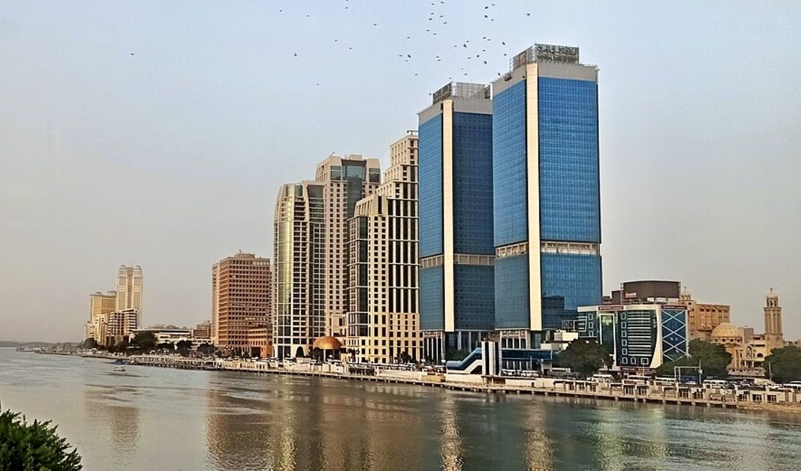
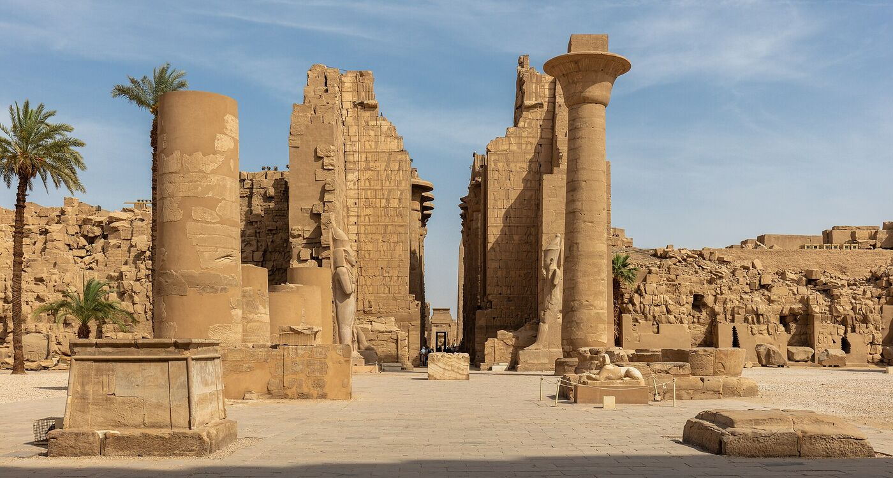
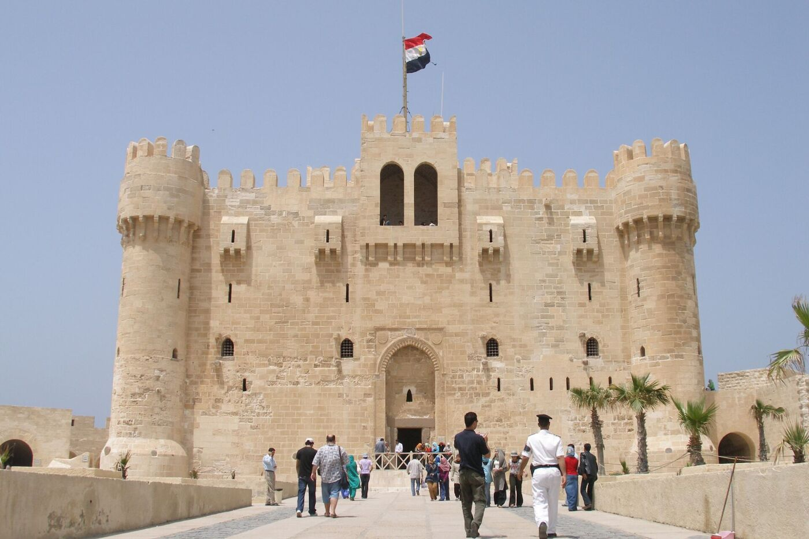

القاهرة
مزيج بين الحضارة الفرعونية والتطور الحديث.
استكشاف القاهرةاستمتع بجمال الطبيعة، التراث، والحداثة في مصر

مزيج بين الحضارة الفرعونية والتطور الحديث.
استكشاف القاهرة
معابد ضخمة على ضفاف النيل، منها الكرنك والأقصر.
استكشاف الأقصر
معبدا فيله وأبو سمبل، وجنوب مصر على النيل.
استكشاف أسوان
مدينة على المتوسط بها قلعة قايتباي ومكتبة الإسكندرية.
استكشاف الإسكندرية